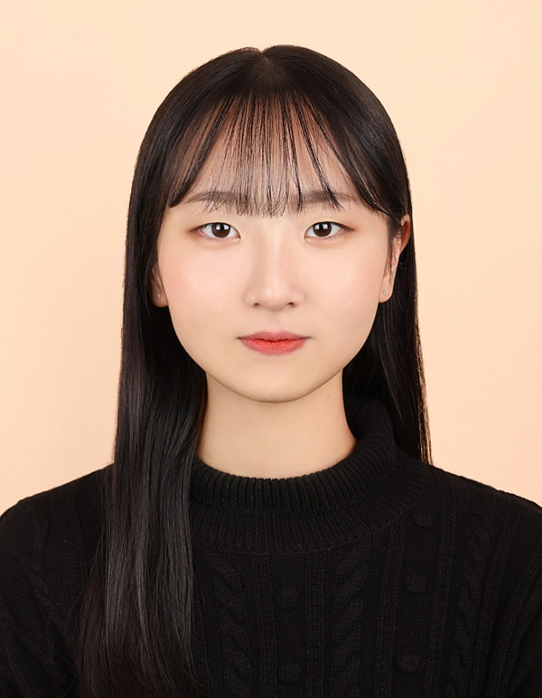
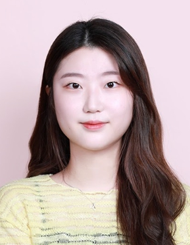
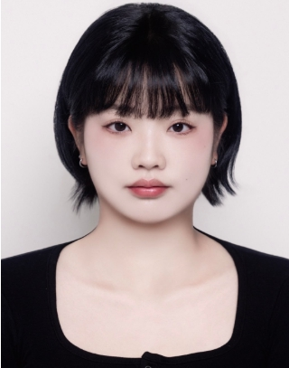

01 / Selective Oxidation
H₂S → S
황화수소 선택산화
악취·부식의 원인인 황화수소를 완전 연소 대신 황(S)으로 선택 산화시켜 자원으로 회수하며 처리합니다.
담당 · 사공누리 석사과정
맑은공기재현실험실은 충남대학교 환경공학과 양재환 교수가 이끄는 환경 촉매 연구실입니다. 산업과 생활 환경에서 발생하는 유해가스를 촉매 반응으로 분해·전환하여 대기질을 개선하는 것을 목표로 합니다.
우리 연구의 대표 플랫폼은 폐 PET 플라스틱의 업사이클링입니다. 버려지는 플라스틱을 고성능 활성탄 촉매로 재탄생시켜, 폐기물과 대기오염 문제를 동시에 해결합니다. 한국원자력연구원(KAERI)에서 쌓은 방사성 기체 처리 경험을 바탕으로 원자력 분야 응용 연구도 함께 수행합니다.
하나의 소재 플랫폼에서 여러 갈래의 유해가스 처리 연구가 뻗어 나갑니다. 폐 PET에서 만든 활성탄에 촉매 기능을 부여해 각기 다른 유해가스를 선택적으로, 또는 완전히 분해합니다.
악취·부식의 원인인 황화수소를 완전 연소 대신 황(S)으로 선택 산화시켜 자원으로 회수하며 처리합니다.
대표 휘발성유기화합물 톨루엔을 저온에서 완전 분해하는 촉매를 개발하여 산업 배가스의 VOC를 제거합니다.
원자력 시설의 방사성 요오드 포집에 쓰이는 TEDA의 촉매 산화 처리를 연구합니다. 한수원(KHNP) K-Cloud 과제로 수행됩니다.
폐 PET를 KOH 활성화로 다공성 탄소 소재로 전환하여 흡착·촉매 기능을 부여하는, 전 연구의 공통 소재 기반입니다.
지도교수와 대학원 연구원이 함께 실험하고, 발표하고, 논문을 씁니다. 그리고 다음 자리는 비어 있습니다.





출신 학교와 무관하게, 환경 문제를 촉매로 풀어내는 데 관심 있는 분을 환영합니다. 타대학 학부생의 진학 문의를 특히 반깁니다.
탄소중립·자원순환 시대에 직접 닿아 있는 환경 촉매를 다룹니다. 폐플라스틱 업사이클링이라는 명확한 서사가 있어 연구 동기와 논문화 가능성이 모두 높습니다.
BK21 FOUR 사업단과 한수원(KHNP)·한국원자력연구원(KAERI) 등 국가기관 협력 과제를 기반으로 운영됩니다. 인건비 등 구체적 지원은 면담 시 안내드립니다.
졸업생들이 퓨어스피어·블루텍·한국폐기물협회 등 환경·소재 분야로 진출했습니다. 대덕연구단지 출연연·에너지 공기업과 가까운 대전 입지의 강점을 살립니다.
다수의 SCI급 논문 실적, 학회 발표 기회, 지도교수와의 밀착 지도를 통해 실험·작성·발표 역량을 함께 키웁니다.
간단한 자기소개와 관심 연구 분야를 담아 이메일을 보내주세요. 편하게 연구실 방문과 면담을 안내드립니다.
학부와 대학원에서 환경공학의 기초와 응용을 가르칩니다. 모든 강의는 플립러닝(거꾸로 교실) 방식으로 운영됩니다.
대기 중 입자상 물질의 거동과 집진 기술을 다루는 학부 전공 과목.
공학 문제 해결에 필요한 수학적 도구를 다지는 기초 과목.
유해가스의 발생과 촉매·흡착 처리 기술을 심화 학습하는 대학원 과목.
국내외 학술지에 게재된 연구 성과입니다. * 표시는 교신저자입니다.
그 외 J. Korean Ceram. Soc., Nucl. Eng. Technol., Canadian Journal of Chemistry 게재 예정 논문 포함, 총 44편.
“너희 중에 누구든지 지혜가 부족하거든 모든 사람에게 후히 주시고 꾸짖지 아니하시는 하나님께 구하라 그리하면 주시리라”
— 야고보서 1:5